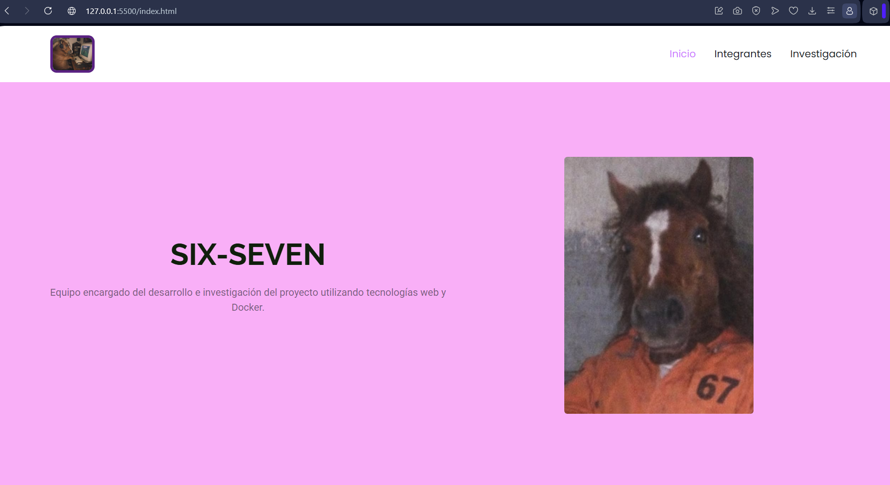
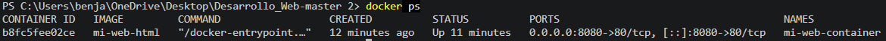

Nginx
Construcción y publicación del sitio mediante Docker y Nginx
¿Qué es Nginx?
Nginx es un servidor web utilizado para entregar contenido a los usuarios mediante HTTP. En nuestro proyecto se utiliza dentro de un contenedor Docker para servir las páginas HTML, hojas de estilo, imágenes y demás recursos estáticos que forman parte del sitio web.
Propósito de Nginx
Una de las principales funciones de Nginx es actuar como servidor web, recibiendo las solicitudes realizadas por el navegador y entregando los archivos correspondientes. Esto permite que un sitio web estático pueda ser publicado y accesible desde un navegador.
¿Cómo utilizamos Nginx en SIX-SEVEN?
En nuestro proyecto utilizamos Nginx dentro de un contenedor Docker para publicar nuestro sitio web. El servidor recibe las solicitudes realizadas mediante el navegador y entrega los archivos del proyecto.
Dockerfile
El Dockerfile contiene las instrucciones necesarias para construir nuestra imagen Docker. En él se establece Nginx como imagen base y se indican los archivos que serán utilizados dentro del servidor web.
FROM nginx:alpine COPY . /usr/share/nginx/htmlInstrucciones principales del Dockerfile
Nuestro Dockerfile utiliza dos instrucciones principales para preparar el servidor web.
FROM nginx:alpine
Indica que la imagen se construirá utilizando nginx:alpine como imagen base. Alpine Linux es una distribución ligera, por lo que permite utilizar una imagen de Nginx de menor tamaño.
COPY . /usr/share/nginx/html
Copia los archivos del proyecto desde el directorio utilizado como contexto de construcción hacia la carpeta /usr/share/nginx/html, que es utilizada por Nginx para servir contenido web.
Construcción de la imagen
Para construir la imagen Docker a partir del Dockerfile utilizamos el comando docker build. Con la opción -t asignamos un nombre a la imagen.
docker build -t mi-web-html .Ejecución del contenedor
Una vez construida la imagen, utilizamos docker run para crear y ejecutar un contenedor basado en ella.
docker run -d -p 8080:80 --name mi-web-container mi-web-htmlMapeo de puertos
Para poder acceder desde nuestro computador al servidor Nginx que funciona dentro del contenedor, es necesario realizar un mapeo entre un puerto del equipo y un puerto del contenedor.
-p 8080:80El puerto 8080 corresponde al puerto utilizado en nuestro computador, mientras que el puerto 80 corresponde al puerto donde Nginx escucha las solicitudes HTTP dentro del contenedor.
Evidencia del sitio funcionando
Una vez ejecutado el contenedor, el sitio puede ser consultado desde el navegador utilizando la dirección:
http://localhost:8080
Contenedor en ejecución
La ejecución del comando docker ps permite comprobar que el contenedor se encuentra funcionando. En nuestro caso, el contenedor utilizado para publicar el sitio se identifica como mi-web-container.
docker ps